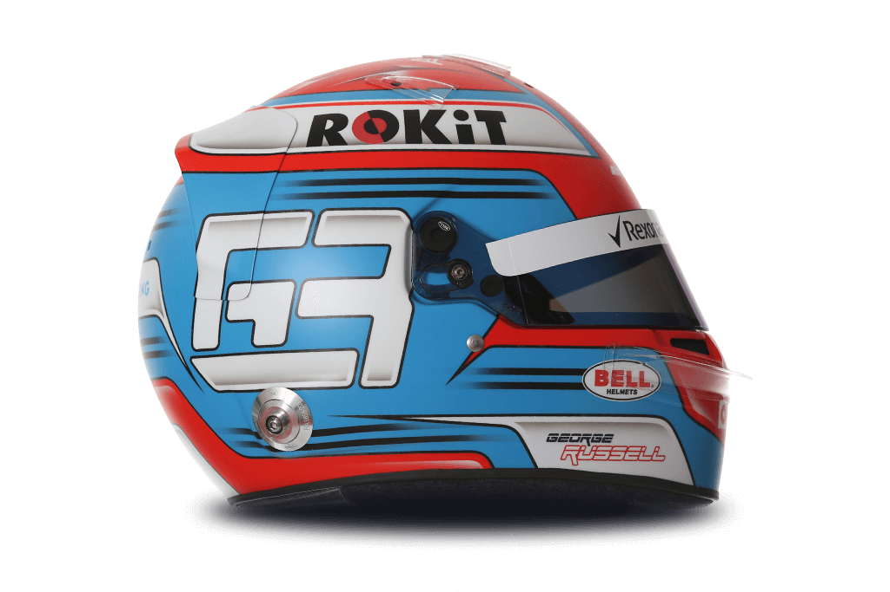

63 
George Russell

| Team | Williams |
| Country | United Kingdom |
| Podiums | N/A |
| Points | 0 |
| Grands Prix entered | 2 |
| World Championships | N/A |
| Highest race finish | 15 (x1) |
| Highest grid position | 19 |
| Date of birth | 15/02/1998 |
| Place of birth | King's Lynn, England |
Biography
He’s the driver with the motto: “If in doubt, go flat out”.
A brilliant baseline speed has served George Russell well as he totted up the titles on his way to Formula 1. The Briton stormed to the 2017 GP3 crown and delivered the 2018 Formula 2 crown under immense pressure.
A refusal to cede ground to his rivals - and commitment to a tricky pass – underpins Russell’s winning mentality.
Spotting his potential, world champions Mercedes swooped to sign him up to their junior programme in 2017 when Russell already had a DTM deal on the table. The Briton banked more experience with practice sessions with Force India and tests for the Silver Arrows.
Next comes a debut F1 season for Williams, who have identified Russell as a hard worker and tenacious talent. The Briton joins the returning Robert Kubica for 2019 in a dream pairing for a young gun and is determined to push his seasoned teammate to the max.
His Dad, who greased the wheels as his mechanic, supported the roots of Russell’s racing career. Family is super-important to the fledging F1 star and next up on Russell’s wish list is celebrating an F1 victory with his clan.
‘Russell the Rocket’ will be going flat out.